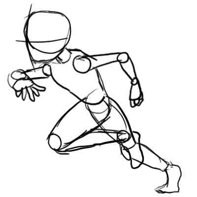

{kind=link}
Notez que l'attribut ALT est obligatoire pour des raisons d'accessibilité :

Long paragraphe : Raptim igitur properantes ut motus sui rumores celeritate nimia praevenirent, vigore corporum ac levitate confisi per flexuosas semitas ad summitates collium tardius evadebant. et cum superatis difficultatibus arduis ad supercilia venissent fluvii Melanis alti et verticosi, qui pro muro tuetur accolas circumfusus, augente nocte adulta terrorem quievere paulisper lucem opperientes. arbitrabantur enim nullo inpediente transgressi inopino adcursu adposita quaeque vastare, sed in cassum labores pertulere gravissimos. Quare hoc quidem praeceptum, cuiuscumque est, ad tollendam amicitiam valet; illud potius praecipiendum fuit, ut eam diligentiam adhiberemus in amicitiis comparandis, ut ne quando amare inciperemus eum, quem aliquando odisse possemus. Quin etiam si minus felices in diligendo fuissemus, ferendum id Scipio potius quam inimicitiarum tempus cogitandum putabat. Advenit post multos Scudilo Scutariorum tribunus velamento subagrestis ingenii persuasionis opifex callidus. qui eum adulabili sermone seriis admixto solus omnium proficisci pellexit vultu adsimulato saepius replicando quod flagrantibus votis eum videre frater cuperet patruelis, siquid per inprudentiam gestum est remissurus ut mitis et clemens, participemque eum suae maiestatis adscisceret, futurum laborum quoque socium, quos Arctoae provinciae diu fessae poscebant. Cumque pertinacius ut legum gnarus accusatorem flagitaret atque sollemnia, doctus id Caesar libertatemque superbiam ratus tamquam obtrectatorem audacem excarnificari praecepit, qui ita evisceratus ut cruciatibus membra deessent, inplorans caelo iustitiam, torvum renidens fundato pectore mansit inmobilis nec se incusare nec quemquam alium passus et tandem nec confessus nec confutatus cum abiecto consorte poenali est morte multatus. et ducebatur intrepidus temporum iniquitati insultans, imitatus Zenonem illum veterem Stoicum qui ut mentiretur quaedam laceratus diutius, avulsam sedibus linguam suam cum cruento sputamine in oculos interrogantis Cyprii regis inpegit. Paphius quin etiam et Cornelius senatores, ambo venenorum artibus pravis se polluisse confessi, eodem pronuntiante Maximino sunt interfecti. pari sorte etiam procurator monetae extinctus est. Sericum enim et Asbolium supra dictos, quoniam cum hortaretur passim nominare, quos vellent, adiecta religione firmarat, nullum igni vel ferro se puniri iussurum, plumbi validis ictibus interemit. et post hoe flammis Campensem aruspicem dedit, in negotio eius nullo sacramento constrictus. Eo adducta re per Isauriam, rege Persarum bellis finitimis inligato repellenteque a conlimitiis suis ferocissimas gentes, quae mente quadam versabili hostiliter eum saepe incessunt et in nos arma moventem aliquotiens iuvant, Nohodares quidam nomine e numero optimatum, incursare Mesopotamiam quotiens copia dederit ordinatus, explorabat nostra sollicite, si repperisset usquam locum vi subita perrupturus. Ciliciam vero, quae Cydno amni exultat, Tarsus nobilitat, urbs perspicabilis hanc condidisse Perseus memoratur, Iovis filius et Danaes, vel certe ex Aethiopia profectus Sandan quidam nomine vir opulentus et nobilis et Anazarbus auctoris vocabulum referens, et Mopsuestia vatis illius domicilium Mopsi, quem a conmilitio Argonautarum cum aureo vellere direpto redirent, errore abstractum delatumque ad Africae litus mors repentina consumpsit, et ex eo cespite punico tecti manes eius heroici dolorum varietati medentur plerumque sospitales. lien vers le début du paragraphe
Cliquez sur l'image pour afficher l'originale : 
Si le nom du fichier est incorecte, ou le chemin, erroné, incomplet, seul l'alternative texte s'affichera.
Notez que l'attribut ALT est obligatoire pour des raisons d'accessibilité :
Les développeurs de site web ont pris l’habitude d’utiliser du faux-texte lors de la construction de la structure du site.
Curieux d'en apprendre plus : W3Schools
Veuillez réaliser un menu de navigation entre 2 pages html